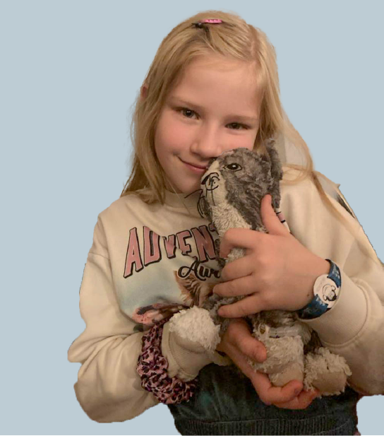
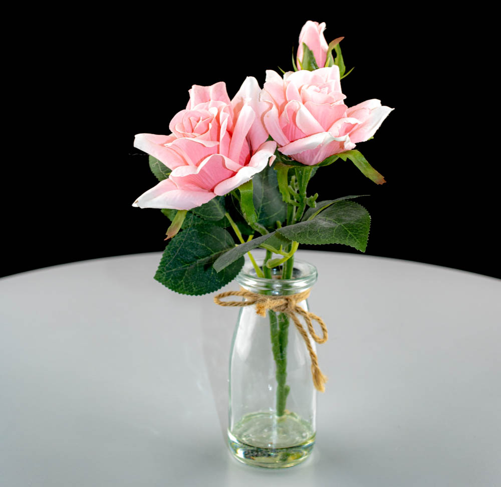
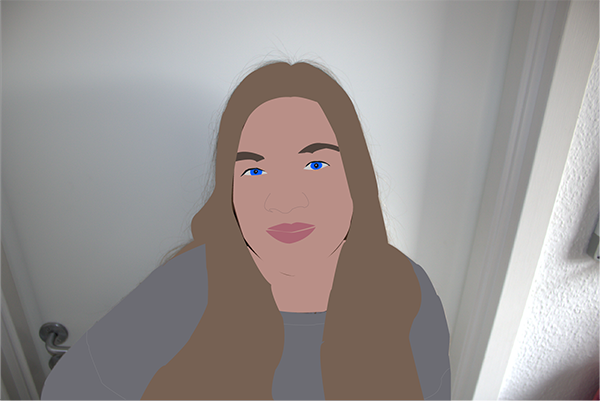
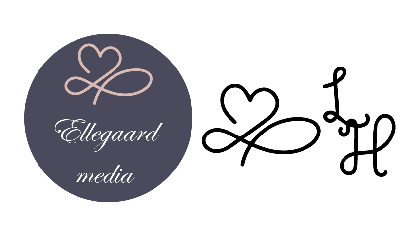
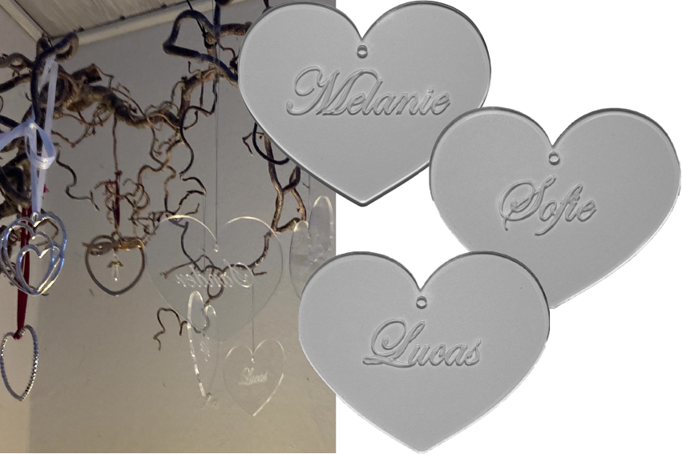
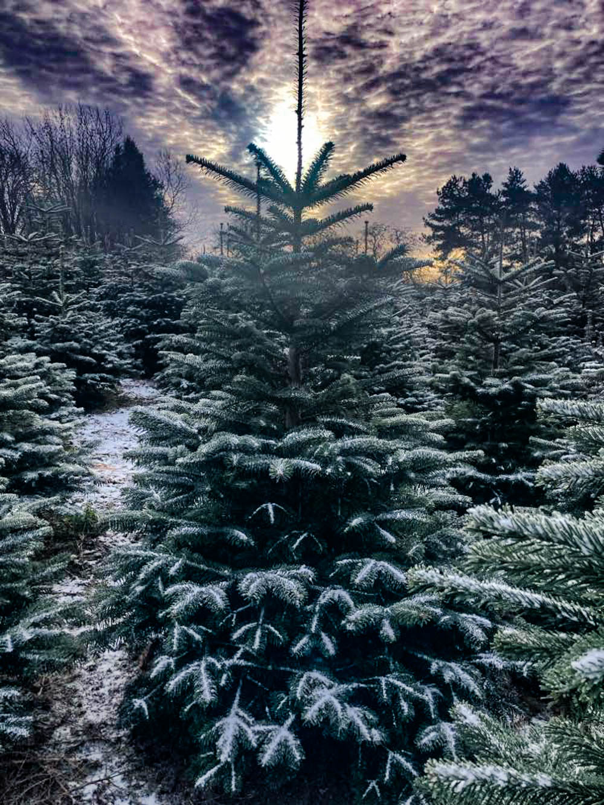
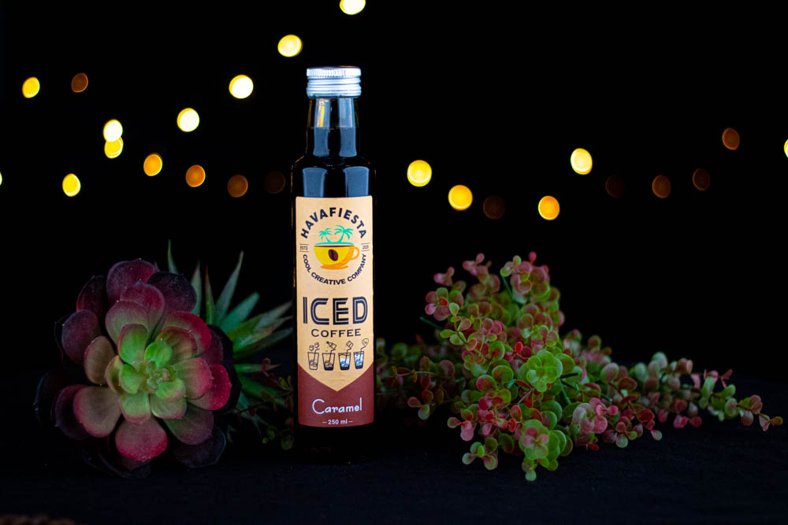

Portfolio
Som multimediedesigner studerende har jeg fået en bred vifte
af kompetencer og det gør, at jeg kan håndtere mange
forskellige opgaver.
De opgaver jeg vil kunne hjælpe dig med er at tage portrætbilleder, produktbilleder, give dig et
nyt logo, men også redigere billeder.
Her viser jeg eksempler på, hvad jeg kan
hjælpe dig med.
Portrætbillede
Portrætbillede af min datter.
Der er brugt Adobe Lightroom Classic, Photoshop og Illustrator til at skabe dette billede.
Produktbillede

Produktbillede af to produkter fra Matas.
Billedet er taget med Canon EOS 750D og redigeret i Adobe Lightroom Classic.
Blomster
Billede af blomster taget med Canon EOS 750D og redigeret i Adobe Lightroom Classic
Selvportræt
Selvportræt lavet i Illustrator med værktøjet pentool.
Logoer
Logoer lavet i Illustrator.
Produktbillede
Produktbillede af hjerter.
Hjerterne er lavet i Illustrator og skåret på en laser.
Naturbillede
Naturbillede af juletræ.
Taget med Iphone og redigeret i Lightroom Classic.
Stemningsbillede
Stemningsbillede af kaffe.
Billedet er taget med Canon EOS 750D og redigeret i Lightroom Classic.
Lad mig høre hvad jeg kan hjælpe dig med.